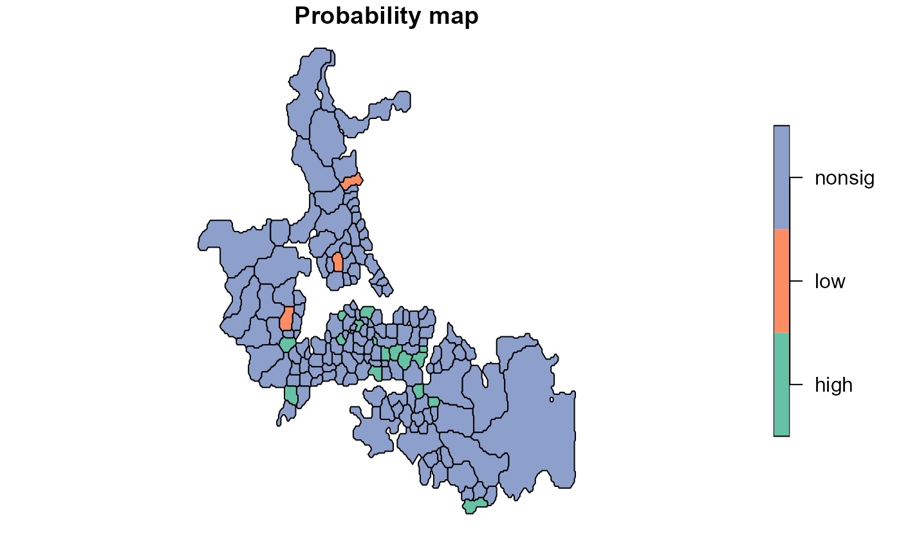

choynowski.RdCalculates Choynowski probability map values.
choynowski(n, x, row.names=NULL, tol = .Machine$double.eps^0.5, legacy=FALSE)
| n | a numeric vector of counts of cases |
|---|---|
| x | a numeric vector of populations at risk |
| row.names | row names passed through to output data frame |
| tol | accumulate values for observed counts >= expected until value less than tol |
| legacy | default FALSE using vectorised alternating side |
A data frame with columns:
Poisson probability map values: probablility of getting a more ``extreme'' count than actually observed, one-tailed with less than expected and more than expected folded together
logical: TRUE if observed count less than expected
Choynowski, M (1959) Maps based on probabilities, Journal of the American Statistical Association, 54, 385--388; Cressie, N, Read, TRC (1985), Do sudden infant deaths come in clusters? Statistics and Decisions, Supplement Issue 2, 333--349; Bailey T, Gatrell A (1995) Interactive Spatial Data Analysis, Harlow: Longman, pp. 300--303.
Roger Bivand Roger.Bivand@nhh.no
auckland <- st_read(system.file("shapes/auckland.shp", package="spData")[1], quiet=TRUE) auckland.nb <- poly2nb(auckland) res <- choynowski(auckland$M77_85, 9*auckland$Und5_81) resl <- choynowski(auckland$M77_85, 9*auckland$Und5_81, legacy=TRUE) all.equal(res, resl)#> [1] TRUErt <- sum(auckland$M77_85)/sum(9*auckland$Und5_81) ch_ppois_pmap <- numeric(length(auckland$Und5_81)) side <- c("greater", "less") for (i in seq(along=ch_ppois_pmap)) { ch_ppois_pmap[i] <- poisson.test(auckland$M77_85[i], r=rt, T=(9*auckland$Und5_81[i]), alternative=side[(res$type[i]+1)])$p.value } all.equal(ch_ppois_pmap, res$pmap)#> [1] TRUEres1 <- probmap(auckland$M77_85, 9*auckland$Und5_81) table(abs(res$pmap - res1$pmap) < 0.00001, res$type)#> #> FALSE TRUE #> FALSE 74 0 #> TRUE 0 93lt005 <- (res$pmap < 0.05) & (res$type) ge005 <- (res$pmap < 0.05) & (!res$type) cols <- rep("nonsig", length(lt005)) cols[lt005] <- "low" cols[ge005] <- "high" auckland$cols <- factor(cols) plot(auckland[,"cols"], main="Probability map")